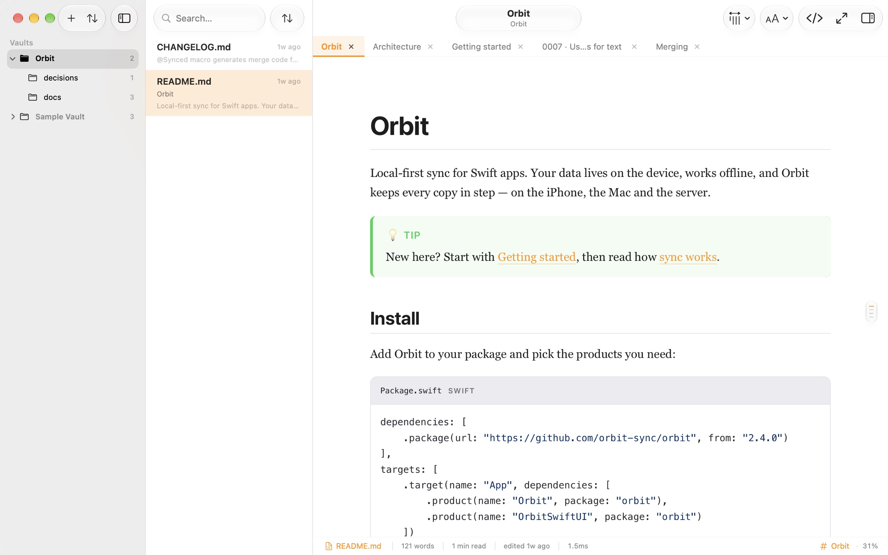
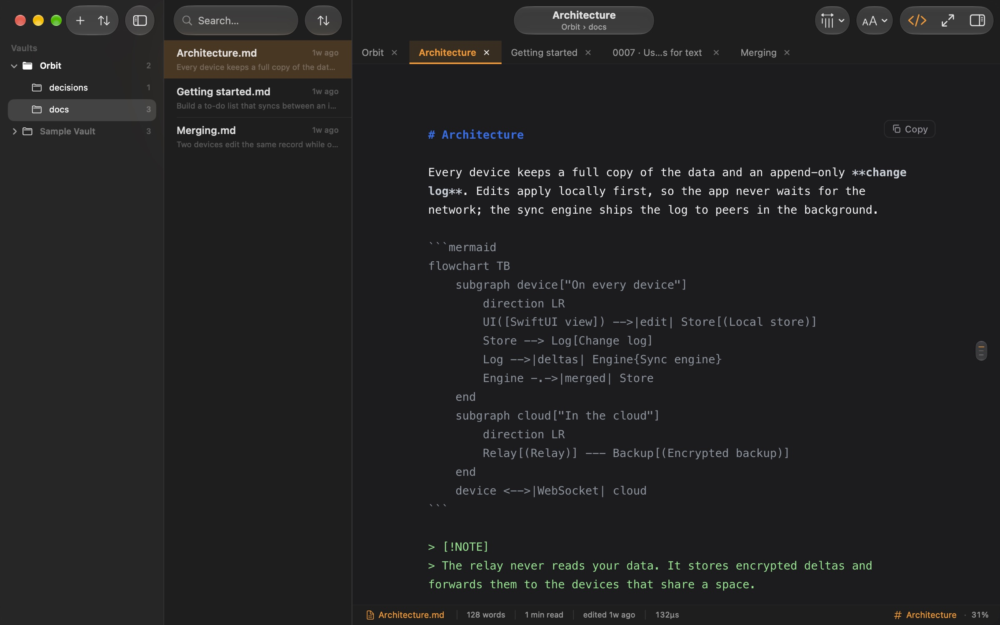
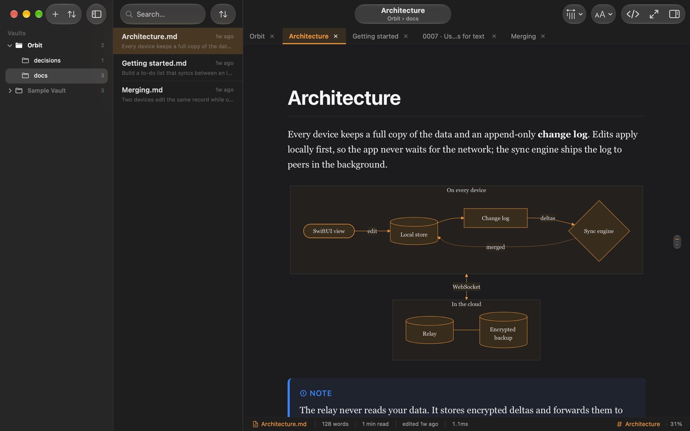
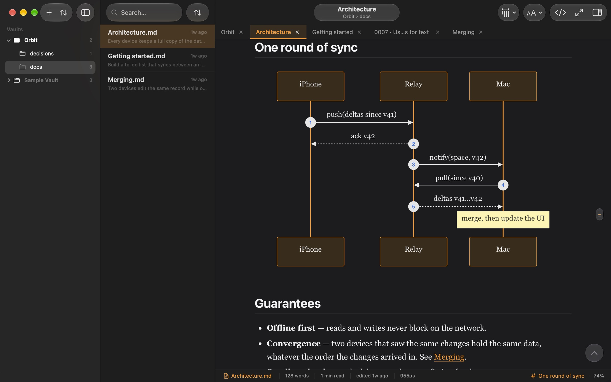
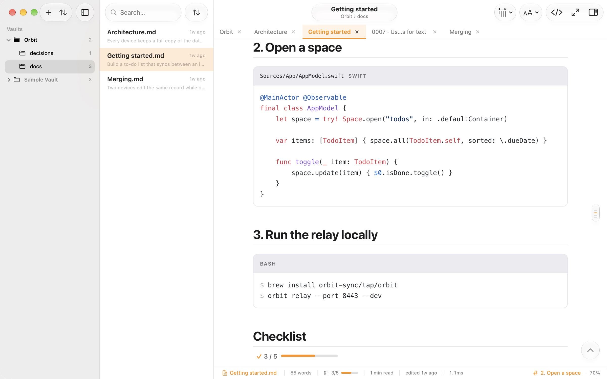
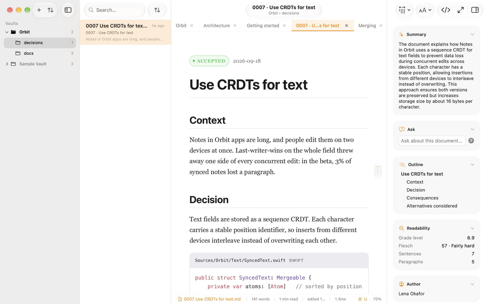
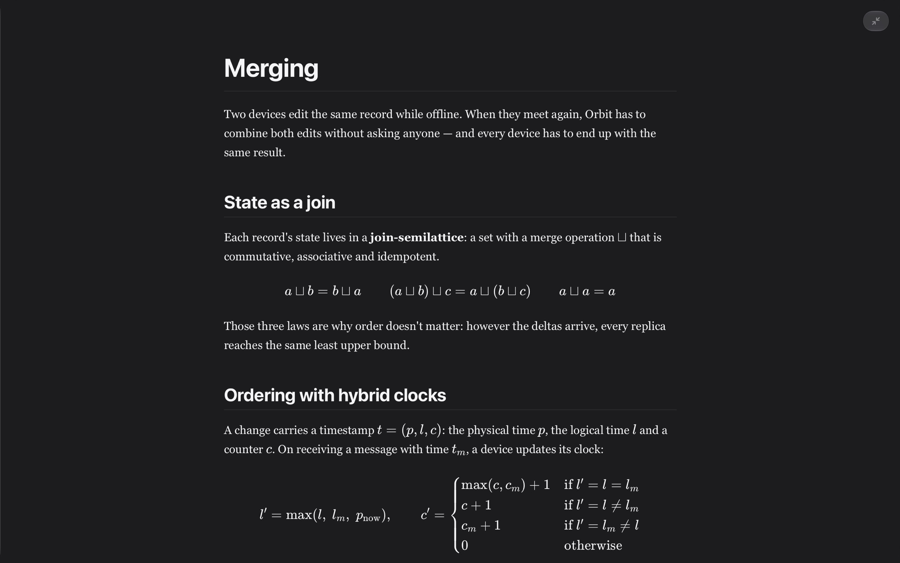
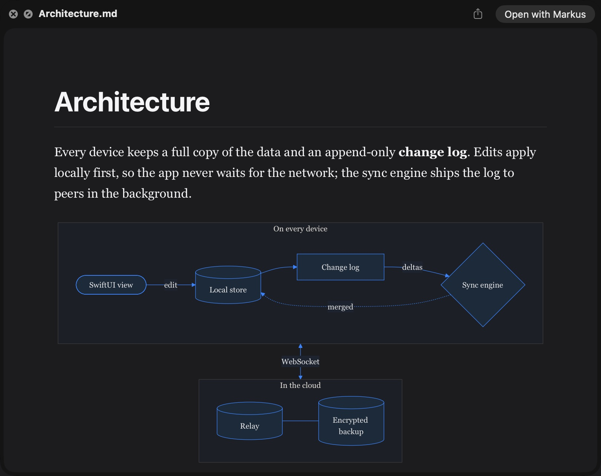
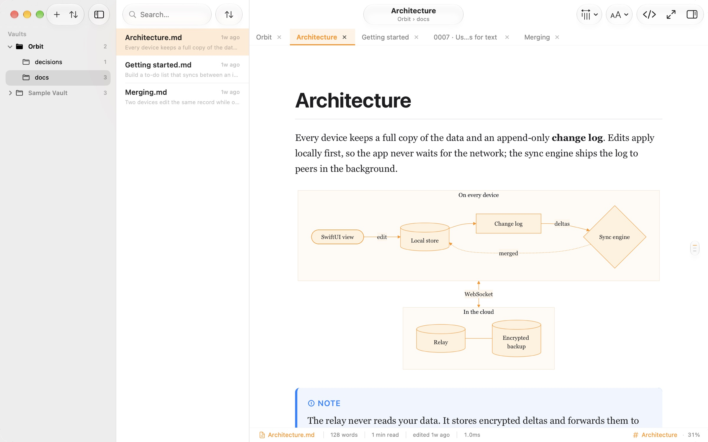

Tip
New here? Start with Getting started, then read how sync works.
Point Markus at a folder — a project's docs, your notes, a cloned repository — and read every file the way it was meant to look.

Markus is a reader, not an editor. It sits next to the editor you already use, and the moment you save, the page updates. Diagrams draw themselves. Code lights up. Math sets like a textbook.
Markdown is a great way to write and a poor way to read. Drag across this file to see what Markus makes of it.


Mermaid diagrams are drawn in place and save as PNG or SVG. GitHub alerts, footnotes, task lists and tables look the way they should. All of it works offline.

Highlighting for dozens of languages, with file names, and copy and open-in-editor buttons.

A short summary of every document, answers about what you're reading, and explanations of a selection. Nothing you read leaves your Mac.

Distraction-free mode, a comfortable reading width and beautifully typeset math.

A full Quick Look preview of any Markdown file, diagrams and math included.

Pick a file, then press Space.
Light and dark themes, your accent color, adjustable text size and a comfortable reading width.

Give each folder its own name, icon and color, so you know where you are at a glance.
Keep the folders you read in the sidebar, each with its own tabs.
Files update the moment you save them in your editor. In a git repository, Markus shows what changed and which branch you're on.
Jump to any file. Back and Forward, an outline of every heading, foldable sections.
See MergingMerging.mdTwo devices edit the same record while offline. Orbit keeps both. for how sync works.
Links between notes, with previews on hover, and backlinks.
Read a repository's Markdown and issues right in Markus. Private repositories work with a read-only token.
Markus collects no data and reads only the folders you open. Your documents stay on your Mac.
The details that make a long document pleasant to live in.
One purchase. No subscription, no account.